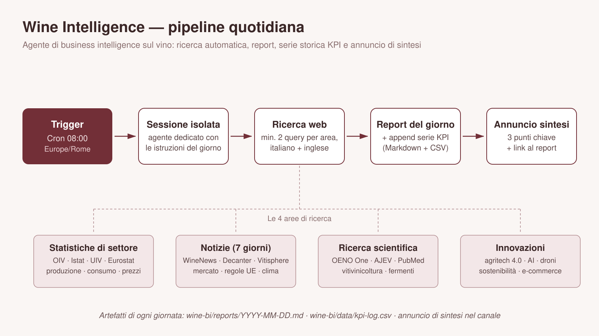

Report più recente
Rotazione geografica di oggi: USA (giorno 31 mod 10 → indice 1). Seconda area approfondita: Italia. Limiti di questa sessione: è sabato e il flusso di notizie è ridotto; il dato retail USA più recente (quattro settimane al 10 ottobre) non è risultato accessibile — il link di Wine Business ridirige e la pagina WSWA/SipSource restituisce 404 — quindi il quadro americano si basa sul data release IWSR e sulle pubblicazioni di settore della settimana; OENO One non ha pubblicato nuovi articoli dopo il 16 ottobre; nessun nuovo dato OIV (la prima stima 2026 esce a novembre).
Sintesi esecutiva
- USA (1ª area): il vino americano è la categoria che perde più delle altre — nel 2025 il volume di vino consumato negli Stati Uniti è calato del 6%, contro il -5% complessivo delle bevande alcoliche e il -3% degli spirits; le porzioni di alcol consumate nel Paese sono scese del 4% e la moderazione resta il driver principale.
- USA (1ª area): la vendemmia 2026 raccontata dal vigneto, non dai numeri — il caso Aridus in Arizona descrive un'annata di caldo estremo e monsoni imprevedibili, in cui le uve «non seguono le regole»: maturazioni disomogenee, finestre di raccolta strettissime e decisiones prese assaggio dopo assaggio.
- Italia (2ª area): la longevità resta il terreno su cui l'Italia vince — nella Top 100 Cellar Selections 2026 di Wine Enthusiast l'Italia piazza 25 vini su 100 e domina con il Barolo, primo con 6 etichette: il posizionamento premium tiene anche in un mercato che compra meno.
- Italia (2ª area): l'enoturismo italiano chiede un cambio di modello — la chiusura del WineTourism Marketplace Italy indica la necessità di articolare l'offerta sui bisogni del viaggiatore contemporaneo, coordinare la governance e misurare il valore, non solo di promuovere territori.
- Innovazione e ricerca: l'AI scende nei processi di cantina mentre la ricerca riscrive il vocabolario del gusto — ispezione automatica dei tappi, cattura dati per le decisioni e irrigazione deficitaria di precisione da un lato; dall'altro uno studio IVES su come gli enologi descrivono davvero i tannini, che riguarda la comunicazione del vino prima ancora della tecnica.
Statistiche & dati
| Indicatore | Valore | Variazione / Nota | Fonte |
|---|---|---|---|
| Volume di vino consumato negli USA, 2025 | -6% | Peggiore del totale bevande alcoliche (-5%) e degli spirits (-3%) | IWSR |
| Porzioni di alcol consumate negli USA, 2024→2025 | -4% | Segnali di moderazione strutturale, non congiunturale | IWSR |
| Volume mondiale di vino, 2025 | -5% | Sesto calo consecutivo della categoria | IWSR |
| Previsione volume mondiale di vino, 2025-2035 | -14% | Contro -1% del totale beverage alcohol | IWSR |
| Top 100 Cellar Selections 2026 — vini italiani | 25 su 100 | Prima nazione per numero di etichette nella lista della longevità | Wine Enthusiast |
| Top 100 Cellar Selections 2026 — Barolo | 6 etichette | Denominazione più rappresentata nella lista | WineNews |
Notizie
- USA (1ª area): IWSR — il vino perde più della birra e degli spirits, e non è un effetto d'annata — il data release annuale dell'IWSR conferma che negli Stati Uniti il volume di bevande alcoliche è calato del 5% nel 2025, con il vino a -6%, la birra a -6% e gli spirits a -3%; misurato in porzioni, il consumo americano scende del 4%. Il punto rilevante per la filiera italiana, che negli USA ha il primo mercato di export, è che il calo del vino non è compensato dalla demografia: la popolazione in età legale cresce, ma beve meno e meno spesso. È lo stesso fenomeno che a livello globale porta il vino a -14% di volume previsto al 2035, il doppio della perdita attesa per gli spirits. (IWSR — US, IWSR — global)
- USA (1ª area): in Arizona una vendemmia «che non segue le regole» — il resoconto della vendemmia 2026 di Aridus Wine Company descrive un'annata di caldo estremo e monsoni fuori stagione: maturazioni accelerate e disomogenee, finestre di raccolta di poche ore, decisioni prese assaggio dopo assaggio invece che su curva di maturazione. È il ritratto operativo di ciò che i dati aggregati non mostrano: la variabilità intra-annata è ormai il problema gestionale principale, e la differenza tra un vino riuscito e uno compromesso si gioca sulla capacità di leggere il singolo blocco di vigneto. (Wine Industry Advisor)
- ITALIA (2ª area): Wine Enthusiast premia la longevità italiana, Barolo in testa — nella Top 100 Cellar Selections 2026, la lista dei vini da cantina della rivista americana, l'Italia piazza 25 etichette su 100 ed è la nazione più rappresentata; il Barolo è la denominazione con più vini in lista (6), seguita da Montalcino, Alto Adige, Valpolicella, Franciacorta, Alta Langa e Verdicchio. In un mercato che riduce i volumi, la capacità di stare nelle liste di lungo periodo resta il modo più efficace per difendere prezzo e posizionamento. (Wine Enthusiast, WineNews)
- ITALIA (2ª area): l'enoturismo italiano ha bisogno di evolvere, non solo di crescere — la chiusura del WineTourism Marketplace Italy ha indicato quattro priorità: articolare l'offerta sulle esigenze del viaggiatore contemporaneo, renderla realmente fruibile, coordinare la governance tra territori e misurare il valore generato. È un cambio di fase: dopo anni di crescita del turismo del vino, il tema non è più attrarre visitatori ma convertire l'esperienza in valore duraturo per le cantine. (WineNews)
- CANTINA: l'AI entra nei processi, non solo nel marketing — nella settimana compaiono tre casi concreti: ispezione automatizzata dei tappi per aumentare la coerenza qualitativa, cattura dati a supporto delle decisioni gestionali della cantina e irrigazione deficitaria gestita con precisione agronomica per migliorare la qualità dell'uva. Sono applicazioni a bassa visibilità mediatica ma ad alto impatto sui costi e sulla variabilità del prodotto. (Wine Industry Advisor)
Ricerca & Innovazione
- IVES Technical Reviews: il «linguaggio dei tannini», ovvero come gli enologi dicono l'astringenza — lo studio di Sáenz-Navajas e colleghi (7 settembre 2026) analizza come i vinificatori comprendono e usano la terminologia del tannino: le parole che circolano in cantina non coincidono sempre con le grandezze misurate, e questo genera aspettative diverse tra enologo, viticoltore e cliente. Il valore pratico è nella formazione e nella comunicazione: definire un vocabolario condiviso riduce gli errori di interpretazione nelle degustazioni tecniche e negli accordi commerciali. (IVES Technical Reviews)
- WSU Viticulture & Enology Extension News (autunno 2026): suolo, azoto e acqua nella stessa equazione — il numero autunnale dell'estensione della Washington State University affronta tre temi che si tengono: il ruolo della microbiologia del suolo nella produzione e nella qualità, la gestione dell'azoto in rapporto all'irrigazione e una panoramica sull'assicurazione del raccolto 2027. È materiale tecnico-divulgativo pensato per chi deve decidere in vigneto, non per la letteratura scientifica. (WSU)
- Irrigazione deficitaria di precisione: l'AgTech che migliora la qualità, non solo il risparmio idrico — la sintesi di settore documenta come la gestione controllata dello stress idrico, guidata da sensori e modelli, sposti l'obiettivo dal risparmio d'acqua alla qualità della bacca: zuccheri, acidità e composti fenolici rispondono alla dinamica dello stress, non solo al suo valore assoluto. In annate come la 2026, con disponibilità idriche irregolari, è la variabile che più incide sulla costanza del prodotto. (Wine Industry Advisor — AgTech)
- Enoforum 2026: gli atti sono disponibili come archivio tecnico aperto — i contributi del congresso di Zaragoza (20-21 maggio 2026) sono ora accessibili attraverso IVES Conference Series, con circa 150 interventi in inglese tra viticoltura ed enologia. È la fonte più densa per chi cerca lo stato dell'arte tecnico senza passare dalle riviste peer-reviewed, e va letta come materiale di trasferimento tecnologico, non come evidenza definitiva. (IVES Conference Series / Enoforum)
Conoscenza enologica del giorno
Perché il Barolo invecchia: il paradosso del colore e il peso del tannino
Il Nebbiolo è il vitigno che meglio spiega perché longevità e intensità colorante non sono la stessa cosa. La buccia è sottile e povera di antociani: il Barolo giovane ha un colore sorprendentemente chiaro, quasi granato, che a molti sembra un segno di debolezza. Ma la stessa buccia è ricchissima di tannini, e il vino ne esce con una struttura tannica e un'acidità elevata — le due condizioni che permettono l'invecchiamento. Con il tempo avviene l'inverso di ciò che si osserva in altri rossi: il colore si stabilizza su toni aranciati mentre i tannini si polimerizzano, perdendo aggressività e guadagnando tessitura. Il Nebbiolo matura tardi, in zone dove le notti di settembre sono fresche: l'escursione termica preserva acidità e aromi, e il profilo aromatico tipico — rosa appassita, catrame, frutta secca — si costruisce in questa fase più che in cantina. Per questo il Barolo è un vino che si giudica male da giovane: quello che sembra chiusura è in realtà la fase in cui la struttura non ha ancora trovato il suo equilibrio. Una lista come la Top 100 Cellar Selections premia esattamente questa capacità di durare. (Wine Enthusiast, IVES Technical Reviews — linguaggio dei tannini)
Fonti
- IWSR — US beverage alcohol consumption drops 5% in volume during 2025
- IWSR — Global beverage alcohol to drop further before recovering (11/06/2026)
- Wine Industry Advisor — A Harvest Where the Grapes Refuse to Follow the Rules (26/10/2026)
- Wine Industry Advisor — homepage (articoli del 22-27 ottobre 2026)
- Wine Enthusiast — Top 100 Cellar Selections 2026
- WineNews — homepage e rassegna del 30-31 ottobre 2026
- IVES Technical Reviews — rivista (articolo sul linguaggio dei tannini, 7/09/2026)
- WSU Viticulture & Enology Extension News — Fall 2026
- IVES Conference Series — Enoforum
Indicatori chiave — ultimi 7 giorni
| Data | Indicatore | Valore | Unità | Fonte |
|---|---|---|---|---|
| 31 ottobre 2026 | porzioni alcol usa 2025 variazione | -4 | % | iwsr |
| 31 ottobre 2026 | top100 cellar 2026 barolo | 6 | n_vini | wineenthusiast |
| 31 ottobre 2026 | top100 cellar 2026 italia | 25 | n_vini | wineenthusiast |
| 31 ottobre 2026 | vino mondo volume 2025 2035 variazione | -14 | % | iwsr |
| 31 ottobre 2026 | vino mondo volume 2025 variazione | -5 | % | iwsr |
| 31 ottobre 2026 | vino usa volume 2025 variazione | -6 | % | iwsr |
| 30 ottobre 2026 | export vino ue 2023 | 17.9 | mld_eur | ceev.eu |
| 30 ottobre 2026 | giacenze mosti italia 30set 2026 | 12.8 | mln_hl | masaf_icqrf |
| 30 ottobre 2026 | giacenze vino italia 30set 2026 | 41.04 | mln_hl | masaf_icqrf |
| 30 ottobre 2026 | previsione volume vino 2025 2035 | -14 | % | iwsr |
| 30 ottobre 2026 | quota ue produzione vino mondiale | 64 | % | ceev.eu |
| 30 ottobre 2026 | vinitaly usa 2026 operatori | 3000 | operatori | prnewswire |
| 30 ottobre 2026 | vinitaly usa 2026 variazione presenze | 36 | % | prnewswire |
| 30 ottobre 2026 | volume vino mondiale 2025 variazione | -5 | % | iwsr |
| 27 ottobre 2026 | champagne shipments 12m giugno2026 | 107.1 | mln_bottiglie | drinks-intel |
| 27 ottobre 2026 | export vino italiano extraue q3 2026 variazione valore | +8 | % | beverfood |
| 27 ottobre 2026 | export vino italiano usa 2025 | 1.75 | mld_eur | winenews.it |
| 27 ottobre 2026 | export vino italiano usa q3 2026 variazione valore | +17 | % | beverfood |
| 27 ottobre 2026 | import vino usa primo semestre 2026 variazione | -25.2 | % | winenews.it |
| 27 ottobre 2026 | superficie vigneto sudafrica 2026 | 85525 | ha | sawine.co.za |
| 27 ottobre 2026 | vendemmia sudafrica 2026 | 1.37 | mln_t | wosa_news |
| 27 ottobre 2026 | vendemmia sudafrica 2026 vs media 5anni | +4 | % | ciatti_company |
| 24 ottobre 2026 | export vino australia 12m giugno2026 | 2.30 | mld_AUD | wineaustralia.com |
| 24 ottobre 2026 | export vino australia canada valore | 188 | mln_AUD | wineaustralia_export_report |
| 24 ottobre 2026 | export vino australia variazione valore | -7 | % | wineaustralia.com |
| 24 ottobre 2026 | produzione mondiale vino 2025 | 227 | mln_hl | oiv.int |
| 24 ottobre 2026 | vendemmia australia 2026 | 1.27 | mln_t | wineaustralia.com |
| 24 ottobre 2026 | vendemmia australia 2026 variazione | -19 | % | wineaustralia.com |
| 24 ottobre 2026 | vendemmia australia 2026 vs media 10anni | -25 | % | wineaustralia.com |
| 24 ottobre 2026 | vigneto mondiale 2025 | 7.0 | mln_ha | oiv.int |
Serie corrente: 30 righe degli ultimi 7 giorni (dal 24 ottobre 2026). Le 172 righe precedenti sono nell'archivio indicatori in fondo alla pagina.
Archivio report — ultimi 10 giorni
- USA (1ª area): il vino americano è la categoria che perde più delle altre — nel 2025 il volume di vino consumato negli Stati Uniti è calato del 6%, contro il -5% complessivo delle bevande alcoliche e il -3% degli spirits; le porzioni di alcol consumate nel Paese sono scese del 4% e la moderazione resta il driver principale.
- USA (1ª area): la vendemmia 2026 raccontata dal vigneto, non dai numeri — il caso Aridus in Arizona descrive un'annata di caldo estremo e monsoni imprevedibili, in cui le uve «non seguono le regole»: maturazioni disomogenee, finestre di raccolta strettissime e decisiones prese assaggio dopo assaggio.
- Italia (2ª area): la longevità resta il terreno su cui l'Italia vince — nella Top 100 Cellar Selections 2026 di Wine Enthusiast l'Italia piazza 25 vini su 100 e domina con il Barolo, primo con 6 etichette: il posizionamento premium tiene anche in un mercato che compra meno.
- USA (2ª area): Vinitaly.USA chiude il debutto a New York con 3.000 operatori, +36% su Chicago — al Pier 36 300 cantine italiane e 2.500 etichette, 1.690 incontri d'affari e 222 giornalisti accreditati; il 60% delle presenze era distribuzione e hotellerie e circa 800 top buyer sono stati selezionati con ITA (27% delle presenze), da Stati Uniti, Canada e Messico. Veronafiere rivendica la scelta di New York; il presidente di ITA Matteo Zoppas parla di un mercato «che si sta riadattando dopo l'introduzione dei dazi». Il calendario prosegue con Hong Kong (13-14 novembre), Shanghai (4 dicembre) e Bangkok (7 dicembre).
- Italia (1ª area): le giacenze valgono 41,04 mln hl a fine settembre (+14,2%), i mosti 12,8 mln hl (+50,5%) — il report ICQRF "Cantina Italia" n. 9/2026 conferma che la vendemmia corta (41,1 mln hl, -7,2%) non ha ancora riequilibrato il sistema: il nodo è la domanda a valle, non l'offerta a monte.
- Mondo: IWSR — il vino perde il 5% di volume nel 2025 e il 14% al 2035, superato dagli spirits per la prima volta dal 1990 — la moderazione riduce i consumi pro capite di circa mezzo litro di alcol puro in dieci anni, mentre gli RTD crescono del 17% e la birra senza alcol dell'8% nel 2025.
- Sud Africa (1ª area): vendemmia 2026 a 1,37 milioni di tonnellate, sopra la media quinquennale — il raccolto si stima in crescita di circa il +4% sulla media 2021-2025 (e sul 2025, fermo a 1,27 mln t), con superficie di vigneto stabile a ~85.500 ha: un'annata abbondante che arriva nel momento peggiore per i prezzi, con i dazi USA al 30% che comprimono il quarto mercato di destinazione.
- Vinitaly.USA apre oggi a New York: 300 cantine italiane cercano il ritorno degli USA — la terza edizione (Pier 36, 26-27 ottobre) porta ~2.500 etichette e il wine2wine Business Forum sul tema dei viaggiatori americani in Italia; conteso il mercato che vale da solo 1,75 miliardi di euro dell'export italiano.
- Export italiano: il terzo trimestre 2026 conferma il rimbalzo — spedizioni extra-UE +8% a valore, con gli USA a +17% in valore e +6,6% in volume: la stoccata dei dazi dell'inizio anno sta venendo parzialmente riassorbita, anche se il cumulato annuale resta negativo.
- Australia (1ª area): vendemmia 2026 la più piccola da più di 25 anni — il National Vintage Report di Wine Australia stima il crush 2026 a 1,27 milioni di tonnellate, -19% sul 2025 (1,57 mln t) e -25% rispetto alla media decennale; le rese perse valgono circa 33 milioni di casse da 9 litri in meno, un ritiro dell'offerta senza precedenti nel secolo.
- Australia: export al minimo da 22 anni, ma il Canada trattiene il mercato — nell'anno a giugno 2026 il valore esportato scende del 7% a A$2,30 miliardi e il volume del 6% a 598 milioni di litri (il più basso dal 2004); unica eccezione il Canada, +20% a A$188 milioni, massima quotazione da sette anni.
- Champagne: archiviato il progetto quasi venticinquennale di espansione dei vigneti — come riporta Wine-Searcher il 23/10, il piano di allargamento della zona di denominazione è stato definitivamente abbandonato: un cambio di paradigma, con l'offerta che non punta più a crescere in un mercato in riequilibrio.
- Francia (1ª area): la vendemmia 2026 resta «storicamente bassa» a ~35 milioni di ettolitri — la stima al 1° ottobre di Agreste (FranceAgriMer) segna -2% sul 2025 e -14% sulla media 2021-2025; Agreste parla di raccolto tra i più bassi da settant'anni, con le canicole e l'erratico 2025 (mildiou) che continuano a pesare sui rendimenti strutturali.
- Cina (2ª area): il vino torna a crescere nelle grandi città — secondo un dato di filiera riportato dalla stampa di settore, gli import di vino a Shanghai sono cresciuti a doppia cifra nel primo semestre 2026 con un +28% nella Grande Baia; quadro coerente con il market update USDA FAS 2026, che fissa gli import totali cinesi attorno a 1,4 miliardi di dollari (-11% annuo) ma con prezzo medio in salita: il mercato si contrae in volume e si aggiorna in qualità.
- Europa: vendemmie corte quasi ovunque, con l'Italia primo produttore UE a 41,1 mhl — la produzione UE 2026 è stimata in 137,4 milioni di ettolitri (-1,2%); l'Italia scende a 41,1 mhl (-7,4% per siccità), la Spagna si ferma a ~34 mhl (quarto anno sotto 37 mhl), la Germania chiude a 7,73 mhl in linea con il 2025.
- Il crollo del vino è strutturale, non un ciclo negativo — lo studio di Kym Anderson sul *Journal of Wine Economics* mostra che dagli anni Sessanta il consumo mondiale di birra e spirits è raddoppiato mentre quello di vino è calato di un quarto: la quota del vino sul consumo globale di alcol è scesa da oltre un terzo a meno di un ottavo nel 2023. Il rimedio indicato è l'estirpazione, ma la superficie vitata mondiale è passata da 5,4 a 4,5 milioni di ettari in 33 anni: troppo lentamente.
- USA (1ª area): la California ha perso 47.229 acri di vigneto in dodici mesi — al 1° agosto 2026 restano 439.115 acri di vigneti in piedi secondo il mapping CAWG-Land IQ; nello stesso periodo Sonoma ha chiuso la vendemmia più precoce degli ultimi anni con un raccolto stimato del 35-40% sotto la media, ma con qualità definita «eccezionale».
- Australia (2ª area): lo Stato più vitato paga i growers per estirpare — il South Australia ha varato un pacchetto da 109 milioni di dollari australiani, di cui 100 milioni in prestiti garantiti fino a 500.000 dollari per azienda, destinati a chi rimuove un vigneto non più sostenibile; la vendemmia 2026 dello Stato è stata di 573.252 tonnellate, la più piccola dal 2000 e il 17% sotto il 2025.
6 report degli ultimi 10 giorni (dal 21 ottobre 2026). I 20 report precedenti sono nell'archivio storico.
Archivio storico report
🗂 20 report più vecchi di 10 giorni (prima del 21 ottobre 2026) — apri per sfogliare
Archivio indicatori
📊 172 righe della serie storica più vecchie di 7 giorni (prima del 24 ottobre 2026) — apri per consultare
| Data | Indicatore | Valore | Unità | Fonte |
|---|---|---|---|---|
| 23 ottobre 2026 | import vino cina 2025 | 1.4 | mld_usd | usda_fas |
| 23 ottobre 2026 | import vino cina 2025 variazione | -11 | % | usda_fas |
| 23 ottobre 2026 | vendemmia francia 2026 | 35 | mln_hl | agreste_franceagrimer |
| 23 ottobre 2026 | vendemmia francia 2026 variazione media 5anni | -14 | % | agreste_franceagrimer |
| 23 ottobre 2026 | vendemmia germania 2026 | 7.73 | mln_hl | dwi_wein.plus |
| 23 ottobre 2026 | vendemmia italia 2026 | 41.1 | mln_hl | uiv_assoenologi_ismea |
| 23 ottobre 2026 | vendemmia spagna 2026 | 34 | mln_hl | wine-intelligence.com |
| 23 ottobre 2026 | vendemmia ue 2026 | 137.4 | mln_hl | vinetur |
| 21 ottobre 2026 | export vino usa canada 2025 variazione | -78 | % | wineinstitute.org |
| 21 ottobre 2026 | quota produzione vino esportata 2025 | 43 | % | anderson_jwe |
| 21 ottobre 2026 | quota vino consumo mondiale alcol 2023 | 12.5 | % | anderson_jwe |
| 21 ottobre 2026 | superficie vitata mondiale 2023 | 4.5 | mln_ha | anderson_jwe |
| 21 ottobre 2026 | vendemmia sonoma 2026 variazione minima | -35 | % | sonomawinegrape.org |
| 21 ottobre 2026 | vendite vino usa 2026 variazione | -3.6 | % | shanken_impact_databank |
| 21 ottobre 2026 | vigneti california in piedi 1ago2026 | 439115 | acri | cawg_landiq |
| 21 ottobre 2026 | vigneti california rimossi 12mesi | 47229 | acri | cawg_landiq |
| 18 ottobre 2026 | aziende vino familiari in passaggio generazionale 2025 | 39.2 | % | vinetur.com |
| 18 ottobre 2026 | candidature aiuto douro 2026 | 425 | numero | jornaleconomico.sapo.pt |
| 18 ottobre 2026 | export vino italia extra ue gen set 2026 | 3.3 | mld_eur | unioneitalianavini.it |
| 18 ottobre 2026 | export vino italia extra ue q3 2026 variazione | 8 | % | unioneitalianavini.it |
| 18 ottobre 2026 | export vino italia usa q3 2026 variazione | 17 | % | unioneitalianavini.it |
| 18 ottobre 2026 | produzione vino portogallo 2026 27 | 6.7 | mln_hl | ivv.gov.pt |
| 18 ottobre 2026 | produzione vino portogallo 2026 27 variazione | 12 | % | ivv.gov.pt |
| 18 ottobre 2026 | scorte vino california 2026 | 22 | mesi | wine-searcher.com |
| 17 ottobre 2026 | import vino cina h1 2026 | 101.4 | mln_litri | china-briefing.com |
| 17 ottobre 2026 | import vino cina h1 2026 variazione | -11 | % | china-briefing.com |
| 17 ottobre 2026 | liv ex fine wine 100 settembre 2026 | 1.1 | % | vinumfinewines.com |
| 17 ottobre 2026 | produzione vino italia 2026 | 41.1 | mln_hl | vinetur.com |
| 17 ottobre 2026 | produzione vino spagna 2026 | 37.6 | mln_hl | vinetur.com |
| 17 ottobre 2026 | produzione vino ue 2026 | 137.4 | mln_hl | vinetur.com |
| 17 ottobre 2026 | scorte totali italia 30set 2026 | 62.7 | mln_hl | wineitaly24.com |
| 17 ottobre 2026 | scorte vino italia 30set 2026 | 41.0 | mln_hl | wineitaly24.com |
| 8 ottobre 2026 | budget promozione export vino italia 2026 | 19 | mln_eur | vinetur.com |
| 8 ottobre 2026 | impegno ricerca red blotch napa fase1 | 2.5 | mln_usd | wineindustryadvisor.com |
| 8 ottobre 2026 | liv ex acquirenti usa share settimanale | 45 | % | liv-ex.com |
| 8 ottobre 2026 | liv ex bordeaux share settimanale | 37.4 | % | liv-ex.com |
| 8 ottobre 2026 | vendemmia alentejo 2026 yoy | 15 | % | ivv.gov.pt |
| 8 ottobre 2026 | vendemmia douro 2026 yoy | 25 | % | ivv.gov.pt |
| 8 ottobre 2026 | vendemmia prosecco docg avanzamento 15set | 90 | % | vinetur.com |
| 8 ottobre 2026 | vendemmia temecula anticipo pinot grigio | 4 | settimane | blog.temeculawines.org |
| 7 ottobre 2026 | export vino sud africa 2025 | 264 | mln_litri | harpers.co.uk |
| 7 ottobre 2026 | export vino sud africa 2025 variazione | -2.4 | % | harpers.co.uk |
| 7 ottobre 2026 | produzione vino francia 2026 stima | 34 | mhl | gamberorosso.it |
| 7 ottobre 2026 | produzione vino spagna 2026 stima | 34 | mhl | gamberorosso.it |
| 7 ottobre 2026 | raccolto uva sud africa 2026 | 1.37 | mln_t | harpers.co.uk |
| 7 ottobre 2026 | resa franconia 2026 | 55 | hl_per_ha | vinetur.com |
| 7 ottobre 2026 | uk alcohol duty uprating 2026 | 3.66 | % | gov.uk |
| 7 ottobre 2026 | vendemmia franconia 2026 | 320000 | hl | vinetur.com |
| 1 ottobre 2026 | champagne 2026 variazione yoy | -48 | % | journaily.com |
| 1 ottobre 2026 | estirpazioni vigneti california 2024 25 | 40000 | acri | cerescourier.com |
| 1 ottobre 2026 | export vino california canada var 2024 25 | -78 | % | kcra.com |
| 1 ottobre 2026 | giacenze vino italia luglio 2026 | 42.6 | mhl | ottopagine.it |
| 1 ottobre 2026 | giacenze vino puglia campagna precedente | 4.28 | mhl | brindisireport.it |
| 1 ottobre 2026 | import vino cina valore usa 2026 | 1.4 | mld_usd | fas.usda.gov |
| 1 ottobre 2026 | produzione vino francia 2026 | 33.9 | mhl | thegrapereset.com |
| 1 ottobre 2026 | produzione vino puglia 2025 | 8.4 | mhl | foggiatoday.it |
| 28 settembre 2026 | crush uva california 2025 | 2.62 | mln_tons | terrainag.com |
| 28 settembre 2026 | export vino francia h1 2026 valore yoy | -2.2 | % | vinetur.com |
| 28 settembre 2026 | export vino italia h1 2026 valore | 3.6 | mld_eur | italiaatavola.net |
| 28 settembre 2026 | export vino italia h1 2026 valore yoy | -6.2 | % | italiaatavola.net |
| 28 settembre 2026 | produzione vino portogallo 2026 | 6.7 | mhl | infowine.com |
| 28 settembre 2026 | produzione vino portogallo 2026 yoy | 12 | % | infowine.com |
| 28 settembre 2026 | uva vino california 2026 senza compratore | 50 | % | vinetur.com |
| 28 settembre 2026 | vendite retail vino usa var 4sett ago2026 | -4.1 | % | vinetur.com |
| 27 settembre 2026 | export agricoli sudafrica h1 2026 yoy | 11 | % | ebnewsdaily.co.za |
| 27 settembre 2026 | export vino sudafrica 2025 volume | 264 | mln_litri | thefarmersjournal.com |
| 27 settembre 2026 | fatturato bodegas spagna 2026 | 8566 | mln_eur | vinetur.com |
| 27 settembre 2026 | gemme champagne distrutte gelo 2026 | 40 | % | terredevins.com |
| 27 settembre 2026 | import vino uk h1 2026 volume | -22 | % | vinetur.com |
| 27 settembre 2026 | liv ex fine wine 100 agosto 2026 mom | 0.7 | % | vinumfinewines.sg |
| 27 settembre 2026 | resa champagne 2026 | 8800 | kg_per_ha | terredevins.com |
| 27 settembre 2026 | turnaround container sudafrica set 2026 | 7.7 | giorni | portstrategy.com |
| 23 settembre 2026 | bottle weight accord target 2026 | 420 | g | swroundtable.org |
| 23 settembre 2026 | consumo vino spagna gen mag 2026 yoy | -7.3 | % | lagacetadelvino.com |
| 23 settembre 2026 | import vino usa h1 2026 valore yoy | -25.2 | % | manzanoswinesusa.com |
| 23 settembre 2026 | mercato vino no alcol 2026 | 3.12 | mld_usd | businessresearchinsights.com |
| 23 settembre 2026 | produzione vino francia 2026 | 33.9 | mhl | thegrapereset.com |
| 23 settembre 2026 | produzione vino francia 2026 yoy | -6 | % | theguardian.com |
| 23 settembre 2026 | produzione vino spagna 2026 prevista | 30 | mhl | agronewscastillayleon.com |
| 22 settembre 2026 | alcohol duty uk gettito mag lug 2026 | 2936 | mln_gbp | gov.uk |
| 22 settembre 2026 | export vino inglese 2025 yoy | 35 | % | winegb.co.uk |
| 22 settembre 2026 | export vino italia agosto 2026 | 634 | mln_eur | inumeridelvino.it |
| 22 settembre 2026 | export vino italia agosto 2026 valore yoy | -2.6 | % | inumeridelvino.it |
| 22 settembre 2026 | giacenze vino italia vigilia vendemmia 2026 | 42.6 | mhl | agronotizie.imagelinenetwork.com |
| 22 settembre 2026 | liv ex turnover agosto 2026 yoy | 15 | % | vinumfinewines.com |
| 22 settembre 2026 | produzione vino uk 2025 | 124377 | hl | thedrinksbusiness.com |
| 22 settembre 2026 | vino fermo uk volumi variazione da 2022 23 | -8 | % | thedrinksbusiness.com |
| 21 settembre 2026 | aste fine wine sothebys H1 2026 | 49.2 | mln_usd | vinetur.com |
| 21 settembre 2026 | bevitori vino usa adulti | 76 | mln | hwy29creative.com |
| 21 settembre 2026 | consumo vino mondiale 2025 | 208 | mhl | forbes.com |
| 21 settembre 2026 | consumo vino mondiale 2025 yoy | -2.7 | % | forbes.com |
| 21 settembre 2026 | dtc usa 2025 volume yoy | -15 | % | sovos.com |
| 21 settembre 2026 | liv ex fine wine 100 ago2026 | 0.7 | % | vinumfinewines.com |
| 21 settembre 2026 | produzione vino mondiale 2025 | 227 | mhl | vinovonk.com |
| 21 settembre 2026 | spesa consumatori usa vino 2025 | 115 | mld_usd | commercial.bmo.com |
| 19 settembre 2026 | export vino fermo germania 2025 valore | 377 | mln_eur | deutscher-weinbauverband.de |
| 19 settembre 2026 | export vino fermo germania 2025 volume | 1.203 | mhl | deutscher-weinbauverband.de |
| 19 settembre 2026 | mercato viticoltura precisione usa 2026 | 2.85 | mld_usd | vinetur.com |
| 19 settembre 2026 | produzione vino germania 2025 | 7.55 | mhl | destatis.de |
| 19 settembre 2026 | produzione vino germania 2025 yoy | -2.6 | % | destatis.de |
| 19 settembre 2026 | valore agricolo sonoma 2025 yoy | -10 | % | winebusiness.com |
| 19 settembre 2026 | valore raccolta winegrape sonoma 2025 | 523 | mln_usd | bohemian.com |
| 19 settembre 2026 | vendemmia germania 2026 inizio anticipo | 1 | settimane | deutscheweine.de |
| 18 settembre 2026 | export spumanti italiani H1 2026 | 1 | mld_eur | winenews.it |
| 18 settembre 2026 | export spumanti italiani H1 2026 volume | 252.2 | mln_l | winenews.it |
| 18 settembre 2026 | export vino italiano usa gen-lug2026 valore yoy | -11 | % | unioneitalianavini.it |
| 18 settembre 2026 | export vino italiano usa luglio2026 valore yoy | quasi_10 | % | unioneitalianavini.it |
| 18 settembre 2026 | import vino usa H1 2026 valore yoy | -25.2 | % | thedrinksbusiness.com |
| 18 settembre 2026 | import vino usa H1 2026 volume yoy | -16.8 | % | thedrinksbusiness.com |
| 18 settembre 2026 | mercato packaging vino 2026 | 7.32 | mld_usd | towardspackaging.com |
| 18 settembre 2026 | prezzo medio import vino usa H1 2026 | 4.52 | eur_l | thedrinksbusiness.com |
| 18 settembre 2026 | sostegno governo portogallo douro 2026 | 12 | mln_eur | aman-alliance.org |
| 18 settembre 2026 | stima vendemmia douro 2026 | 1.4 | mhl | theportugalbrief.pt |
| 18 settembre 2026 | stima vendemmia douro 2026 yoy | 25 | % | theportugalbrief.pt |
| 18 settembre 2026 | stima vendemmia francia 2026 | 33.8 | mhl | winenews.it |
| 18 settembre 2026 | stima vendemmia portogallo 2026 | 6.7 | mhl | theportugalbrief.pt |
| 18 settembre 2026 | stima vendemmia portogallo 2026 yoy | 12 | % | theportugalbrief.pt |
| 18 settembre 2026 | vendemmia portogallo 2026 27 | 6.7 | mhl | vinha.co.uk |
| 18 settembre 2026 | vendemmia portogallo 2026 27 yoy | 12 | % | vinha.co.uk |
| 16 settembre 2026 | export vino italiano canada H1 2026 | 208.6 | mln_eur | winenews.it |
| 16 settembre 2026 | export vino spagna H1 2026 valore yoy | -10.2 | % | wine-intelligence.com |
| 16 settembre 2026 | export vino spagna H1 2026 volume yoy | -20.2 | % | wine-intelligence.com |
| 16 settembre 2026 | mercato precision viticulture 2026 | 6.82 | mld_usd | fortunebusinessinsights.com |
| 16 settembre 2026 | prezzo uva cava 2026 minimo | 0.25 | eur_kg | wine-searcher.com |
| 16 settembre 2026 | stima vendemmia spagna 2026 | 31.5 | mhl | the-silent-luxury.com |
| 16 settembre 2026 | vendemmia rias baixas 2026 | 49 | mln_kg | vinetur.com |
| 16 settembre 2026 | vendemmia rioja 2026 uva raccolta | 225.5 | mln_kg | riojawine.com |
| 15 settembre 2026 | crush uva vino australia 2026 | 1.27 | mln_ton | wineaustralia.com |
| 15 settembre 2026 | crush uva vino australia 2026 yoy | -19 | % | wineaustralia.com |
| 15 settembre 2026 | danno dazi usa15 vino italiano | 317 | mln_eur | unioneitalianavini.it |
| 15 settembre 2026 | export vino australia giu2026 | 2.30 | mld_aud | wineaustralia.com |
| 15 settembre 2026 | export vino australia giu2026 yoy | -7 | % | wineaustralia.com |
| 15 settembre 2026 | export vino australia volume giu2026 | 598 | mln_l | thedrinksbusiness.com |
| 15 settembre 2026 | valore vendemmia australia 2026 | 837 | mln_aud | wineaustralia.com |
| 15 settembre 2026 | valore vendemmia australia 2026 yoy | -26 | % | wineaustralia.com |
| 14 settembre 2026 | champagne produzione 2026 vs 2025 | -49 | % | reuters.com |
| 14 settembre 2026 | export mondiale vino 2025 | 94.8 | mhl | reuters.com |
| 14 settembre 2026 | export mondiale vino 2025 yoy | -4.7 | % | reuters.com |
| 14 settembre 2026 | export vino italiano 5m 2026 | sotto_3 | mld_eur | gamberorosso.it |
| 14 settembre 2026 | mercato precision viticulture 2026 | 6.82 | mld_usd | fortunebusinessinsights.com |
| 14 settembre 2026 | produzione francia 2026 stima | 33.9 | mhl | theguardian.com |
| 13 settembre 2026 | champagne produzione 2026 vs 2025 | -49 | % | reuters.com |
| 13 settembre 2026 | consumo mondiale vino 2025 | 208 | mhl | oiv.int |
| 13 settembre 2026 | export vino italiano T1 2026 | 2.34 | mld_eur | unioneitalianavini.it |
| 13 settembre 2026 | export vino italiano T1 2026 yoy | -6.8 | % | unioneitalianavini.it |
| 13 settembre 2026 | export vino italiano usa T1 2026 yoy | -15.4 | % | liberacr.it |
| 13 settembre 2026 | produzione francia 2026 stima | 33.9 | mhl | theguardian.com |
| 12 settembre 2026 | champagne resa commerciale 2026 | 8800 | kg_ha | winecap.com |
| 12 settembre 2026 | export vino italiano S1 2026 usa valore yoy | -14.1 | % | askanews.it |
| 12 settembre 2026 | export vino italiano S1 2026 valore yoy | -6.2 | % | vinonews24.it |
| 12 settembre 2026 | export vino italiano S1 2026 volume yoy | -4 | % | vinonews24.it |
| 12 settembre 2026 | import vino cina 2025 | 1.4 | mld_usd | fas.usda.gov |
| 12 settembre 2026 | produzione vino regno unito 2025 | 124377 | hl | thedrinksbusiness.com |
| 11 settembre 2026 | consumi vino usa T1 2026 volume yoy | -8.3 | % | winenews.it |
| 11 settembre 2026 | crush uve california 2025 | 2.6 | mln_ton | farmprogress.com |
| 11 settembre 2026 | gdo vino spumante italia T2 2026 yoy | -2 | % | inumeridelvino.it |
| 11 settembre 2026 | iwc2026 medaglie francia | 849 | medaglie | vinetur.com |
| 11 settembre 2026 | spesa consumer vino usa 2025 | 115 | mld_usd | winebusiness.com |
| 11 settembre 2026 | vigneti estirpati california 2025 | 38 | mila_acri | nytimes.com |
| 11 settembre 2026 | volume mercato vino usa 2025 yoy | -4 | % | bmo_via_winebusiness.com |
| 10 settembre 2026 | grant napa green sostenibilita 2026 | 3 | mln_usd | wineindustryadvisor.com |
| 10 settembre 2026 | import mondiale vino T1 2026 valore | 7.4 | mld_eur | winenews.it |
| 10 settembre 2026 | livex valore scambi gen2026 vs dic2025 | 21.7 | % | vin-x.com |
| 10 settembre 2026 | stima produzione vino castilla la mancha 2026 27 | 19 | mhl | democrata.es |
| 10 settembre 2026 | variazione import mondiale vino T1 2026 yoy | -7.5 | % | winenews.it |
| 9 settembre 2026 | consumo mondiale vino 2025 | 208 | mhl | oiv.int |
| 9 settembre 2026 | export vino italiano extraUE gen-apr2026 yoy | -8.5 | % | unioneitalianavini.it |
| 9 settembre 2026 | export vino italiano gen-feb2026 yoy | -13.3 | % | winemeridian.com |
| 9 settembre 2026 | giacenze vino italia 31luglio2026 | 42.6 | mhl | agronotizie.imagelinenetwork.com |
| 9 settembre 2026 | produzione mondiale vino 2025 | 227 | mhl | oiv.int |
| 9 settembre 2026 | stima produzione francia 2026 | 33.9 | mhl | thegrapereset.com |
| 9 settembre 2026 | variazione giacenze vino italia yoy | 6.9 | % | vinetur.com |
Come funziona
Ogni mattina alle 08:00 un agente autonomo esegue ricerche web in italiano e inglese su quattro aree tematiche, scrive il report del giorno, aggiunge gli indicatori quantitativi alla serie storica e rigenera questa pagina.
- Statistiche di settore — produzione, consumo, scambi, prezzi (OIV, CEEV, Istat, UIV, Eurostat, AgriData UE)
- Notizie — aziende, mercato, regolamentazione UE, dazi, clima (ultimi 7 giorni; WineNews, The Drinks Business, Vinetur, Teatro Naturale)
- Ricerca scientifica — viticoltura ed enologia (OENO One, IVES Technical Reviews, AJEV, PubMed, Google Scholar)
- Archivi — i report più vecchi di 10 giorni e gli indicatori più vecchi di 7 giorni restano consultabili nelle sezioni Archivio storico e Archivio indicatori
- Innovazioni — agritech 4.0, AI, droni e sensori, sostenibilità
Ogni dato riportato rimanda alla fonte originale: se un dato non è verificabile viene marcato come "dato non confermato".
